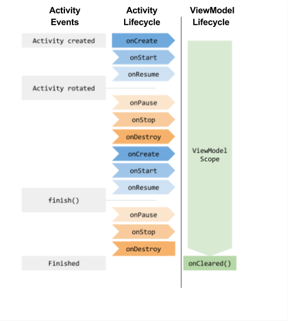

In this Codelabs, you will learn to improove your UI :
This codeLabs is based on the Dialog, Toast, SnackBar, Menu CodeLabs. It is recommanded to finish the previous CodeLabs before starting this one.
In this section, we will create an activity which list all the saved counters when the user click on the "Restore" menu button.
The user will be able to click on a counter, the selected counter will be passed back to the main activity to be displayed.
Create a class SavedCounters in the package saved containing a List<Integer> that will hold all the saved values.
Add a getter getSaved returning the list of saved counters and a method to add a counter save(int value).
In the constructors, pre-fill the list with the values: 4, 6, 8, 10, 12, 20
Make the constructor private and add the static code to make the SavedCounters a singleton
static private SavedCounters sInstance;
static private Object LOCK = new Object();
static public SavedCounters getInstance() {
synchronized (LOCK) {
if (sInstance == null) {
sInstance = new SavedCounters();
}
return sInstance;
}
}
Create the activity to display the list of the saved counters
Create a new SavedActivity and it's layout associated. Add a RecyclerView in the layout.
To display a list of data in a ListView or a RecyclerView, you need to give to the view an adapter.
This class is in charge of:
A RecyclerView adpater have to extends a RecyclerView.Adapter class.
This Adpater class is generic, this means that it let's you choose which type of object it will work with.
Let's try it:
public class SavedCountersAdapter extends RecyclerView.Adapter {
}
Android will complain that the class must implements 3 methods. Alt+Enter will create it for you.
The Adapter class is abstract and will force you implement the 3 followings methods
getItemCountRecyclerView the number of item to displayonCreateViewHolderRecyclerView the way to create a item viewonBindViewHolderRecyclerView the way to set the n-th element of the data to display in an item viewAdd a private List<Integer> mSaved field to your SavedCountersAdapter.
You have to initialize that data, you can either:
SavedCounters.getInstance().getAll()Now you can fill the code of the first method:
@Override
public int getItemCount() {
return mSaved.size();
}
In the second method you have to create a view for one item of the list and create a ViewHolder object to be returned to the RecyclerView.
public RecyclerView.ViewHolder onCreateViewHolder(@NonNull ViewGroup parent, int viewtype)
Let's start by creating a ViewHolder and return it.
But this class is abstract, so you need to create another class CounterViewholder that inherit of it.
You can create it in the code of the adpater.
private static class CounterViewHolder extends RecyclerView.ViewHolder {
public CounterViewHolder(@NonNull View itemView) {
super(itemView);
}
}
Notes that the only constructor of a ViewHolder takes a View in argument. This is the item view we need to create.
In a first time, let's give it TextView
@NonNull
@Override
public RecyclerView.ViewHolder onCreateViewHolder(@NonNull ViewGroup parent, int viewtype) {
CounterViewHolder holder = new CounterViewHolder(new TextView(parent.getContext()));
return holder;
}
The Context needed to create the TextView is given by the parent view.
The public void onBindViewHolder(@NonNull RecyclerView.ViewHolder viewHolder, int position) method provides as arguments a ViewHolder and a position
The code should update the view in the ViewHolder with the data for the given position.
Our data is Integer value = mSaved.get(position)
And we know for sure that the itemView that contains the ViewHolder is a TextView.
TextView textView = (TextView) viewHolder.itemView;
Then we just have to update the TextView :
@Override
public void onBindViewHolder(@NonNull RecyclerView.ViewHolder viewHolder, int position) {
Integer value = mSaved.get(position);
TextView textView = (TextView) viewHolder.itemView;
textView.setText(Integer.toString(value));
}
Your adapter is ready to be used
In the SavedActivity, get the RecyclerView object using the findById method.
Setup the RecyclerView to use the SavedCountersAdapter using the setAdapter method and choose a 2 column layout (but you can play with other layout type) using the setLayoutManager.
It should display the list.
Not the best ever UI in the world but we will manage that.
As we define the full page layout to define the widgets that will be created in a activity, we can also define the widget that will be created for a list item.
Create a layout list_item_saved_counter with a single button that will display the counter value (You can reuse the TextView of the main activity).
<?xml version="1.0" encoding="utf-8"?>
<android.support.constraint.ConstraintLayout xmlns:android="http://schemas.android.com/apk/res/android"
xmlns:app="http://schemas.android.com/apk/res-auto"
android:layout_he android:layout_width="match_parent"
ight="wrap_content"
android:layout_margin="10dp">
<Button
android:id="@+id/button"
android:layout_width="match_parent"
android:layout_height="wrap_content"
android:fontFamily="sans-serif"
android:text="0"
android:textAlignment="center"
android:textColor="@android:color/white"
android:textSize="72sp"
android:textStyle="bold"
android:background="@color/screenBackground"
app:layout_constraintBottom_toBottomOf="parent"
app:layout_constraintLeft_toLeftOf="parent"
app:layout_constraintRight_toRightOf="parent"
app:layout_constraintTop_toTopOf="parent"
/>
</android.support.constraint.ConstraintLayout>
Now we will use it as an itemView in the Adapter
To manually create a View from a XML layout file, we need a Infalter. It's provided by the Context.
LayoutInflater inflater = LayoutInflater.from(viewGroup.getContext());
Infalter will create the view objects for you from a XML resource.
View v = inflater.inflate(R.layout.list_item_saved_counter, parent, false);
So now your `onCreateViewHolder should looks like
@NonNull
@Override
public RecyclerView.ViewHolder onCreateViewHolder(@NonNull ViewGroup parent, int itemType) {
LayoutInflater inflater = LayoutInflater.from(parent.getContext());
View v = inflater.inflate(R.layout.list_item_saved_counter, parent, false);
return new CounterViewHolder(v);
}
But now the onBindViewholder method will crash with a ClassCastException when we try to cast the view holded by the ViewHolder into a TextView
That's fear, the view holded is no more a TextView but a ConstraintLayout
Now you should change the binder to find by id the Button in the layout and set the value.
Each View object have a findById method for this purpose.
@Override
public void onBindViewHolder(@NonNull RecyclerView.ViewHolder viewHolder, int position) {
final int value = mSaved.get(position);
Button button = viewHolder.itemView.findViewById(R.id.list_item_button);
button.setText(value);
}
This should looks like
At this point, you should ask yourself something like: "But why this ViewHolder ? This really complicates every thing for nothing."
Let's see if we refactor the code to make things simpler
First the RecyclerView.Adpater is generic.
public abstract static class Adapter<T extends RecyclerView.ViewHolder>
This means that it's allow you to manage you any class that extends RecyclerView.ViewHolder.
And the good news is that we have a CounterViewHolder that is an extension of a ViewHolder.
Change the SavedCounterAdpater class so it extends a RecyclerView.Adapter<SavedCountersAdapter.CounterViewHolder>
public class SavedCountersAdapter extends RecyclerView.Adapter<SavedCountersAdapter.CounterViewHolder> {
...
}
Studio is not happy with that:
CounterViewHolder is privateprotectedonCreateViewHolder and the onCreateViewHolder.CounterViewHolderThe good point of handling CounterViewHolder is that we will be able to store quick access to the views holded in it
to minize the stuff to do during the binding.
The binding method is call realy often we the user scroll the list and update of the view should be realy quick if you don't
want that your list lags during the scroll.
For instance, the findViewById shall be done once for all at the creation of the CounterViewHolder, no needs to do it during each binding.
Let's do that:
Add a filed Button button in the CounterViewHolder and call the FindViewById in the constructor of the CounterViewHolder.
static protected class CounterViewHolder extends RecyclerView.ViewHolder {
Button button;
public CounterViewHolder(View v) {
super(v);
button = v.findViewById(R.id.list_item_button);
}
}
Now the onBindViewHolder can be simplified like:
@Override
public void onBindViewHolder(@NonNull CounterViewHolder viewHolder, int position) {
final int value = mSaved.get(position);
viewHolder.button.setText(String.valueOf(value));
}
Which is much more simpler than the previous one, isn't it ?
Maybe not with this example, but with more complex list item, it will make your code easier to read and maintain.
Binding should be quick as we may bind thousands of data to the view in few seconds when scrolling.
View and ViewHolder creation may be slower as we will create only a few of them. Only the ones needed to fill a page of the list.
Now, what we want, is that when a user click on a item of the list, the value is set as the new counter in the MainActivity
Dislike the ListView, the RecyclerView doesn't have OnItemClickListener. You need to do it by yourself.
Create an OnSavedCounterClickListener interface in the Adapter with a method declaration void onSavedCounterClicked(int value).
Pass this listener the Adapter constructor as an argument and in the binder method, set the OnCLickListener of the button to call back the Listeners when the user click on the button.
So the onBindViewHolder becomes:
@Override
public void onBindViewHolder(@NonNull CounterViewHolder viewHolder, int position) {
final int value = mSaved.get(position);
viewHolder.button.setText(String.valueOf(value));
viewHolder.button.setOnClickListener((view) -> {mListener.onSavedCounterClicked(value);});
}
In the SavedActivity, you need to pass to the "SavedCountersAdapter" an implementation of the listener. You can either:
RecyclerView.Adapter mAdapter = new SavedCountersAdapter(this);
RecyclerView.Adapter mAdapter = new SavedCountersAdapter(new SavedCountersAdapter.OnSavedCounterClickListener() {
@Override
public void onSavedCounterClicked(int value) {
returnValue(value);
}
});
RecyclerView.Adapter mAdapter = new SavedCountersAdapter(value -> returnValue(value));
RecyclerView.Adapter mAdapter = new SavedCountersAdapter(this::returnValue);
In this case the adapter won't have a longuer life than the Activity so everything is safe
Display a Toast or add a Log in the returnValue method of the SavedActivity to be sure you get the good value when clicked.
In the MainActivity
Make the MainActivity start the SavedActivity when the user clicks on the "restore" menu item.
Use startActivityForResult as we need the SavedActivity send back the selected value. This method get an int as a requestCode argument. It's just a flag that will be used in the follinwing method, the value is not important.
In the same activity, overrides the method onActivityResult(int requestCode, int resultCode, @Nullable Intent data)
If everythings goes well:
requestCode will be the same int that the one passed in the start activityresultCode can be Activity.RESULT_OK, Activity.RESULT_CANCELdata should contains the valueYou have to check all the arguments and set the value in the Counter if needed
In the SavedActivity
Make the SavedActivity use the setResult method with the resultCode Ok if the user click on a value, or Cancel if the user click on the back button.
Make sure the value selected is stored in the Intent passed to the setResult method.
That's all you need, test it !!!
Now, let's move to some even more advanced IHM features.
Since the begining of the Android developpement, developpers are complaining about using the findViewById method.
All the UI code is stuffed of that method, or you need to make then once for all in the onCreate of the UI classes.
This so called "Boiler plate" codes should be avoid and some external library have proposed some idea (like ButteKnife).
Data Binding feature is the proposal pushed by Jetpack.
We already see a fonctiionality associated with data binding.
Instead of write in our code:
Button reset = findViewById(R.id.reset_button);
reset.setOnClickListener(this::resetMe);
We have added in the layout android:onCLick="resetMe" attribute that do the same.
In the same idea, we can bind in the layout the data to be displayed in the view of the layout.
Anyway, we will see there how to avoid using findViewById in our code
Data Binding stuff will generated at build time. You need to enable it in the build.gardle file of the app like that:
android {
...
dataBinding {
enabled = true
}
}
You also need to envelop the layout of the Activities with the XML tag <layout>
<?xml version="1.0" encoding="utf-8"?>
<layout xmlns:android="http://schemas.android.com/apk/res/android"
xmlns:app="http://schemas.android.com/apk/res-auto"
xmlns:tools="http://schemas.android.com/tools">
<android.support.constraint.ConstraintLayout
android:layout_width="match_parent"
android:layout_height="match_parent"
tools:context=".CounterActivity"
android:background="@color/screenBackground">
...
</android.support.constraint.ConstraintLayout>
</layout>
Notes that xmlns attributes are set in the largest tag by convention
Once everything setted, rebuild the project
If all the magic happens, you should be able to import the class
private ActivityMainBinding mActivityMainDataBinding;
This class in auto magicaly created.
The name comes from the layout name R.layout.activity_main will generate a ActivityMainBinding class where R.layout.activity_random will generate a ActivityRandomBinding class.
Now, in the onCreate of the activity instead of using the legacy setContentView method, use:
mActivityMainDataBinding = DataBindingUtil.setContentView(this, R.layout.activity_main);
Then, the mActivityMainDataBinding should have reference to all the widget with an id in the layout.
Use it in the updateUI method:
private void updateUI(int value) {
// Update the text view.
mActivityMainDataBinding.textView.setText(Integer.toString(value));
}
Do the same in the others activity.
One another issue when developping Android applications is the notification of the Views when the data are modified.
LiveData allows you to present to the Views a data that may change, the Views can register a observer to update automatically when the data change.
In our code MainActivity code, each time the counter change, we have to update the UI.
Let's change the value of the counter into a LiveData.
In the Counter object change the int value into a MutableLiveData<Integer> mCount.
Change the get method to return the LiveData.
Change the set method, the reset method, the inc method and the isInit method to update or read the value of the LiveData.
To get the value, use Integer mCount.getValue()
To update the value, use void mCount.postValue(Integer v)
Each time a call to postValue is made, all the observer of the LiveData will be called.
In the MainActivity, register an obeserver to the LiveData.
mCounter.get().observe(this, this::updateUI);
Now you can remove all other calls to the updateUI methods but all calls to Counter : set, reset and inc methods should trigger an UI update.
In the RandomActivity, we can use LiveData to add some more suspense.
In the random package, create a Random class holding a MutableLiveData<String>. This data will be updated by a Generator.
public abstract class Generator {
final protected int mCount;
public Generator(int count) {
mCount = count;
}
abstract void compute(MutableLiveData<String> randomLiveData);
}
Constructor of the Random class will get a Generator in argument and call the compute method.
Implement a SuspenseGenerator that extends the Generator class with the following compute method:
@Override
public void compute(MutableLiveData<String> randomLiveData) {
new Thread(() -> {
try {
randomLiveData.postValue(".");
Thread.sleep(1000);
randomLiveData.postValue("..");
Thread.sleep(1000);
randomLiveData.postValue("...");
Thread.sleep(1000);
} catch (InterruptedException e) {
Log.e("Error", "sleep interrupted", e);
}
java.util.Random random = new java.util.Random();
int randomInt = 0;
if (mCount > 0) {
randomInt = random.nextInt(mCount);
}
randomLiveData.postValue(String.valueOf(randomInt));
}).start();
}
Here a worker thread change the data to be displayed.
Use this class Random in the RandomActivity. Observe the String LiveData and update the UI when a new value is posted.
Suspense !!!
The most currious of you may have observe that the UI is recreated (a onCreate is called) when we switch the mobile in landscape/portrait.
This is a common issue in Android developement. The system destroy the Activity when the mobile orientation change. Allowing the application to rebuild the layout (some activity may have a different layout between portrait and landscape mode).
To avoid that, you can fix the orientation of the application, but it's not accessible.
You can also add the XML android:configChanges="orientation" attribute to the activity description in the AndroidManifest.xml.
But in this case, you need to override the onConfigChange method to handle orientation change.
ViewModel are another way to solve this issue.
The ViewModel is a component aware of the lifecycle of the Activity. It will last until the activity is actually destroyed (see the following schema).

Let's try that !
First add ViewModel in the project dependencies
implementation "android.arch.lifecycle:runtime:1.1.1"
implementation "android.arch.lifecycle:extensions:1.1.1"
annotationProcessor "android.arch.lifecycle:compiler:1.1.1"
Make the Counter class extends ViewModel
That's all ;)
But creation of the object in the MainActivity is more complicated
Instead of call new Counter(), we need to register it in the ViewModel engine.
mCounter = ViewModelProviders.of(this).get(Counter.class);
This call will create a Counter object at the first launch of the activity, reuse the same object until the activity is really destroyed, and release the object when the activity is destroyed.
Note that observer to the LiveData have been realeased when the activity was destroyed.
And mCounter was not reseted when we change the device orientation.
This will be more impressive !
The only way to keep the Random and the Generator during the swap is to use static stuff, which is easy to do (Singleton) but takes some memory for ever in the application.
Using ViewModel we will be able to create a Random data during device swap.
Make the Ramdom class extends View Model.
Creation of the instance will be more complicated than for the Counter one. The Random constructor takes a Generator argument.
You need to pass to the ViewModelProviders a factory able to create instance of Random class.
Random mRandom = ViewModelProviders.of(this, factory).get(Random.class);
This factory should extends ViewModelProvider.NewInstanceFactory and override the create method this way:
@NonNull
@Override
public <T extends ViewModel> T create(@NonNull Class<T> modelClass) {
return (T) new Random(generator);
}
Once implemented, You can test that the Random class is not recreated even is we switch the device in landscape / portrait
Separate the UI from the data may appears as a lot of code for finally no great utility.
But having a code separted in component allows us to:
ViewModelProviders callsThis is the end